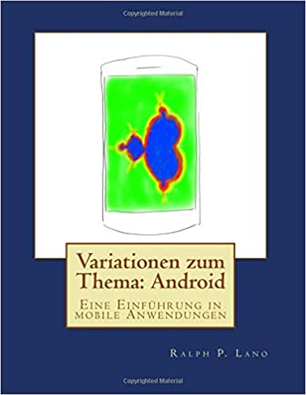

Variationen zum Thema:
Android
Eine Einführung in mobile Anwendungen
von Ralph P. Lano, 1. Auflage
.
Für wen
Dieses Buch richtet sich an Bachelor-Studierende im fünften oder sechsten Semester. Als Voraussetzung muss man vor allem Java mitbringen. Ausserdem sollte man etwas über Algorithmen und Datenstrukturen gehört haben, sonst machen viele der Beispiele keinen Sinn. Auch wird speziell im siebten Kapitel erwartet, dass man bereits eine Netzwerk Vorlesung gehört hat, vor allem die Protokolle IP, TCP, UDP und HTTP sollten bekannt sein. Viele der Beispiele beziehen sich auf meine ersten beiden Bücher [1,2], ohne macht wahrscheinlich die Hälfte dieses Buches keinen Sinn. Es ist also kein alleinstehendes Buch für Android und eigentlich nicht zum Selbststudium gedacht, sondern als Begleitung zu einer Vorlesung.
Von wem
ich bin seit 2011 Professor für Internetprogrammierung und Multimediaapplikationen im Studiengang MediaEngineering an der Technischen Hochschule Nürnberg. Von 2003 bis 2010 war ich Professor für Softwaretechnik und multimediale Anwendungen an der Hochschule Hof, und von 2010 bis 2011 Professor für Media and Computing an der Hochschule für Technik und Wirtschaft Berlin. Ich promovierte 1996 an der University of Iowa zum Thema 'Quantum Gravity: Variations on a Theme'. Von 1996 bis 1997 war ich Postdoctoral Research Associate am Centre for Theoretical Studies des Indian Institute of Science. In der Zeit von 1997 bis 2003 war ich zunächst bei Pearson Education und später bei der Siemens AG in der Softwareentwicklung und dem Projektmanagement tätig.
Über was
das Hauptthema in diesem Buch ist die Android Programmierung. Wir beginnen damit einfache Benutzeroberflächen zu schreiben, erst einmal ohne und dann mit XML Layout Dateien. Wir lernen was ein Intent ist und was man damit alles anstellen kann. Dann werden wir uns etwas ausführlicher mit 2D-Grafik Anwendungen beschäftigen, aber auch mit Toucheingaben und Gesten. Das Lesen von Resourcen und Assets folgt als nächstes, aber auch das Lesen und Schreiben von internen und externen Speicher wird angesprochen. Die SQLite Datenbanken wird kurz vorgestellt, vertieft mit einigen Content Provider Beispielen. Natürlich werden auch die Sensoren behandelt, beginnend mit den Positions-Sensor, über die Umweltsensoren und schließlich sehen wir uns noch einige Beispiele mit den Linear-, Drehbeschleunigungs- und dem Magnetfeldsensor an.
Nach diesen einführenden Kapiteln geht es dann langsam ans Eingemachte: wir beschäftigen uns ausführlich mit Concurrency (Nebenläufigkeit). Dabei lernen wir Schritt für Schritt worauf man achten muss und wie man die allgemeinen Fallstricke vermeidet. Darauf aufbauend folgt dann die Netzwerkprogrammierung, wobei wir hier ziemlich ins Detail gehen. Es werden die Themen TCP, UDP und JSON behandelt, auch zu Bluetooth und NFC gibt es Beispiele. Als Schmankerl gibts dann TicTacToe als Netzwerkspiel. Im letzten Kapitel werden wir dann mit zahlreichen Beispielen die Multimediamöglichkeiten moderner Androidgeräte ausreizen.
Zusätzlich gibt es noch vier Special Topics: Eines beschäftigt sich mit Performance, genauer Grafikperformance. Dabei geht es aber eher darum ein Gefühl für die Problematik zu entwickeln, und weniger das schnellste Programm aller Zeiten zu schreiben. Ähnlich ist es bei dem Thema Libraries: hier ist Reuse das eigentliche Thema. Services und BroadcastReceivers sind zwar nützlich, aber man benötigt sie eher selten, deswegen sind die in die Special Topics verbannt worden. Und last but not least, folgt ein Special Topic zu Kryptographie. Jeder redet darüber, aber keiner zeigt einem wie es geht. Das kann jetzt aber niemand mehr behaupten.
Wie
lernt man Android Programmierung? Wie alles, durch viel üben! Deswegen ist auch dieses Buch wieder voll mit Übungsbeispielen. Die Veranstaltung so wie ich sie unterrichte besteht aus drei Komponenten: der Vorlesung, der Übung und Hausaufgaben. Die Vorlesung ist zwei Stunden pro Woche und entspricht jeweils dem ersten Teil eines Kapitels im Buch. Ein Kapitel schaffen wir in ca. ein bis zwei Wochen. In den Übungen, die vier Stunden alle zwei Wochen stattfinden, widmen wir uns dann den Projekten. Dabei schaffen wir zwischen zwei und vier der Projekte pro Übung. In der Übung arbeiten die Studierenden in Teams, meist zu zweit, um sich gegenseitig zu helfen. Die Hausaufgaben werden im zweiwöchentlichen Rhythmus bearbeitet und benötigen ca. 4 bis 5 Stunden. Es ist wichtig, dass die Studierenden alleine an der Hausaufgabe arbeiten.
Wo
finde ich die Beispiele und den Quellcode? Die gibt es auf der Webseite zum Buch: www.VariationenZumThema.de. Der Code umfasst knapp 300 Klassen, ca. 20 kLoC (wenn man weiß was das bedeutet). Er dient nur zu Schulungs- und Demonstrationszwecken, und enthält mit Sicherheit zahllose Fehler. Auch wurde er vor allem in Hinblick auf Lesbarkeit und Verständlichkeit geschrieben, deswegen stürzt die eine oder andere App auch mal ohne ersichtliche Gründe ab. Updates, Informationen zur Entwicklungsumgebung, und das Buch in elektronischer Version gibt's auch auf der Webseite. Das Buch in Papierform gibt's bei Amazon, in Schwarz-Weiß (billig).
Darf ich
die Beispiele verwenden, oder das Buch kopieren? Dieses Material steht unter der Creative-Commons-Lizenz Namensnennung - Nicht-kommerziell - Weitergabe unter gleichen Bedingungen 4.0 International (CC-BY-NC-SA 4.0) D.h. Sie dürfen das Material in jedwedem Format oder Medium vervielfältigen und weiterverbreiten, das Material remixen, verändern und darauf aufbauen. Aber Sie müssen angemessene Urheber- und Rechteangaben machen, einen Link zur Lizenz beifügen und angeben, ob Änderungen vorgenommen wurden. Diese Angaben dürfen in jeder angemessenen Art und Weise gemacht werden, allerdings nicht so, dass der Eindruck entsteht, der Lizenzgeber unterstütze gerade Sie oder Ihre Nutzung besonders. Sie dürfen das Material nicht für kommerzielle Zwecke nutzen. Und wenn Sie das Material remixen, verändern oder anderweitig direkt darauf aufbauen, dürfen Sie Ihre Beiträge nur unter derselben Lizenz wie das Original verbreiten und Sie dürfen keine zusätzlichen Klauseln oder technische Verfahren einsetzen, die anderen rechtlich irgendetwas untersagen, was die Lizenz erlaubt. Um eine Kopie dieser Lizenz zu sehen, besuchen Sie http://creativecommons.org/licenses/by-nc-sa/4.0/.
Der Quellcode steht unter der MIT License (http://choosealicense.com/licenses/mit/).
Warum
dieses Buch? Seit 1996 programmiere ich Java, und seit ca. 2009 halte ich die Vorlesung "Multimediaapplikationen" in verschiedenen Formen, Studiengängen und Hochschulen. All die Zeit habe ich immer wieder versucht meine Vorlesung an diesem oder jenem Buch zu orientieren. Das Buch von Herrn Burnette [3] kommt am ehesten ran an das was ich suche. Allerdings hat das Buch nur sehr wenige Beispiele und es beschäftigt sich nur mit Android, es fehlen fortgeschrittenere Themen, die man im fünften oder sechsten Semester durchaus ansprechen kann.
Woher
kommen die Ideen? Mehr als die Hälfte der Ideen basieren auf meinem ersten beiden Büchern [1,2]. Zu empehlen ist auch das Buch von Ed Burnette [1], das eine sehr schöne Einführung in das Thema liefert, und das Buch von Ian Darwin [4], das gespickt ist mit allen möglichen Beispielen. Der Rest hat sich einfach so ergeben in den Jahren.
Referenzen
[1] R. Lano, Variationen zum Thema: Java: Eine spielerische Einführung, CreateSpace Independent Publishing Platform
[2] R. Lano, Variationen zum Thema: Algorithmen - Eine Einführung anhand von Beispielen, CreateSpace Independent Publishing Platform
[3] Ed Burnette, Hello, Android, O'Reilly, 2009
[4] Ian F. Darwin, ed, Android Cookbook, O'Reilly, 2012
.